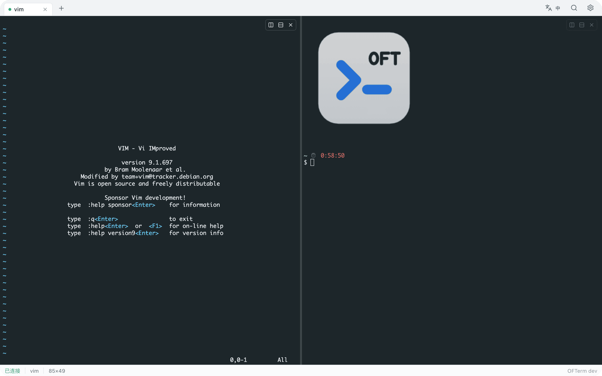
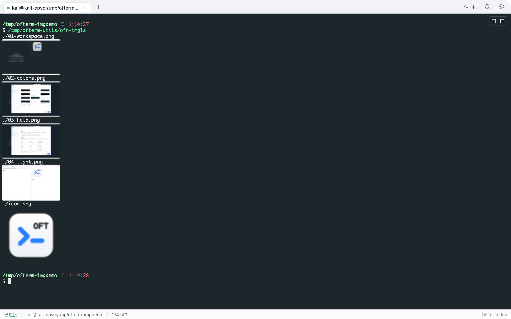
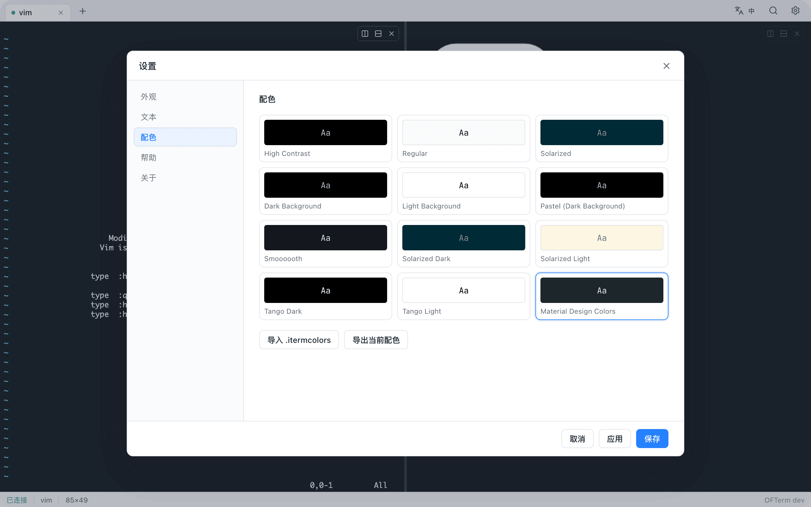
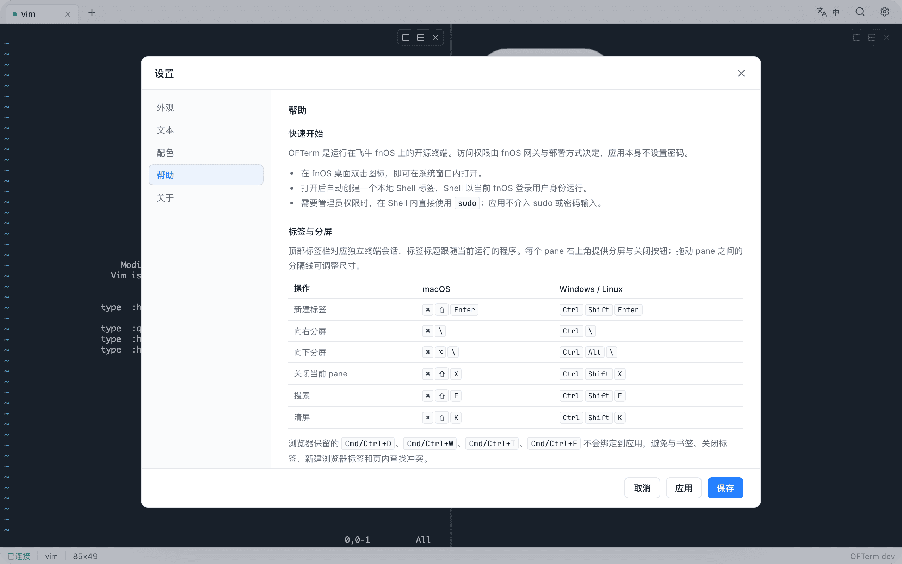
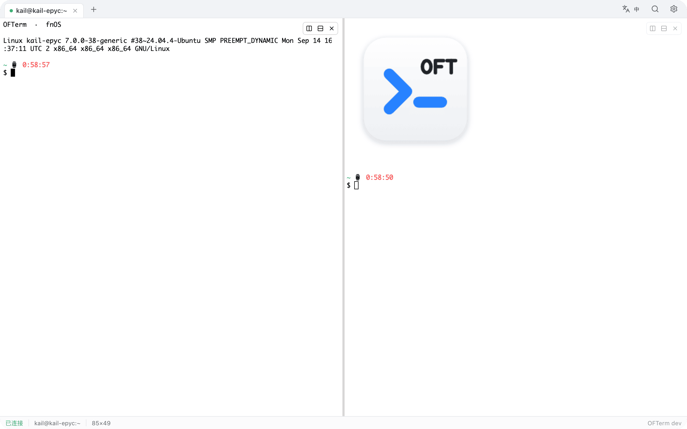

什么是 OFTerm？
OFTerm 是运行在飞牛 fnOS 上的开源终端：分屏、智能标签标题、终端内图片显示、经典配色、亮色/暗色主题、终端内搜索。后端为单个 Go 静态二进制，前端基于 xterm.js，通过 fnOS 统一网关运行，无遥测、无外部请求。
为什么用 OFTerm？
如果你在终端里泡的时间很长，这些细节加起来就是效率：⌘\ 向右分屏、标签标题自动跟随当前运行的程序（vim、ssh、htop……）、imgcat 让图片直接出现在终端里、11 套经典配色外加 Material Design Colors。OFTerm 是自由软件，源码在 GitHub 上以 Apache-2.0 协议发布。
如何安装？
在 fnOS 应用中心添加自定义应用源，填入下面的地址即可看到并安装 OFTerm；也可以直接从 GitHub Releases 下载 fpk 手动安装。
https://raw.githubusercontent.com/melchior-voidwolf/ofterm/main/fnpack.json
分屏与标签
把一个标签切成任意多个 pane，横竖随意组合。每个 pane 是独立会话，右上角提供分屏与关闭按钮，拖动分隔线调整尺寸。非聚焦的 pane 会稍微变暗，一眼看清焦点在哪。

终端内图片（imgcat / imgls）
OFTerm 完整支持 OSC 1337 内联图片协议：imgcat 把图片直接画进终端，imgls 以缩略图网格浏览整个目录。看一张刚生成的截图、确认日志里的图表、浏览相册——都不用离开终端窗口。图片随终端输出流式传输，在 ssh 到远端的 shell 里同样可用。

标签标题跟随前台任务
标签标题不再永远是“Shell”——它实时显示当前正在运行的程序：打开 vim 显示 vim，连上 ssh 显示 ssh，跑起 htop 显示 htop。支持 shell 集成（OSC）的标题设置，两者自动取最新。
经典配色
内置 11 套经典终端配色——Solarized Dark/Light、Tango、Pastel、Smoooooth 等等——外加默认的 Material Design Colors。也支持一键导入/导出 .itermcolors 文件。

快捷键与帮助
新建标签、分屏、关闭 pane、搜索、清屏都有趁手的快捷键，macOS 与 Windows/Linux 键位分别适配。内置帮助页随时可查。

亮色与暗色
界面主题支持亮色、暗色与跟随系统，终端配色独立于界面主题，可自由组合。

还有更多
终端内显示图片（imgcat）、页内搜索、WebGL 渲染（自动降级）、断线短时重连、粘贴防护、中英文界面一键切换、随包附带 JetBrains Mono 兜底字体保证跨平台对齐。
下载
当前版本 v1.0.0，支持 fnOS x86_64 与 arm64。
推荐通过自定义应用源安装，升级更省心。校验值见 Release 页面的 SHA256SUMS。